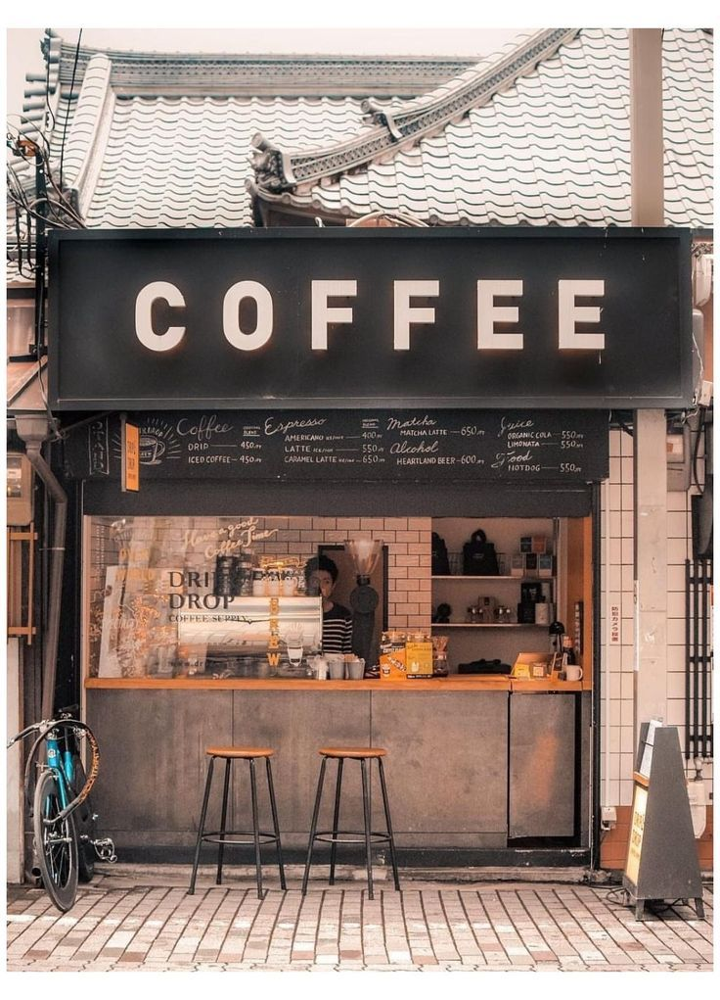
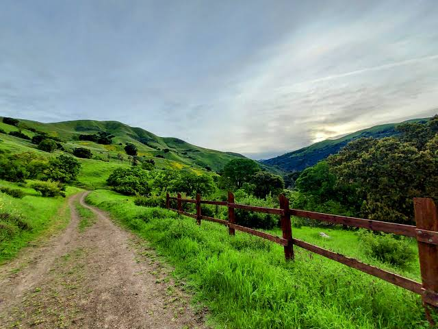

Step Outside
Finding space beyond the page
Close your books, step into a new environment. Enter a place outside your normal routine. Tall trees, trails. You could enter trails that could inspire a new world you want discover.
Ways to recharge:

A local coffee shop & creative reset: Pack up your laptop and head to your local coffee shop. Who know what stepping out your usually routine can discover. The world is at your hands. Get isnpired by your surroundings maybe design or desgin your own house beat that you hear in your local coffee shop.
A quick neighborhood breather: Walk over to your closest park. Sit on a bench, feel the cool afternoon wind, and possibly invite a friend along to chat without checking off a single book on your TBR list.

A canyon trail: Head into Alum Rock Park to wander among the sycamores and quiet creeks. The cool shade and open paths clear out mental clutter fast.
Take all the time you need. The books will still be there on your shelf whenever you're ready to pick them back up.